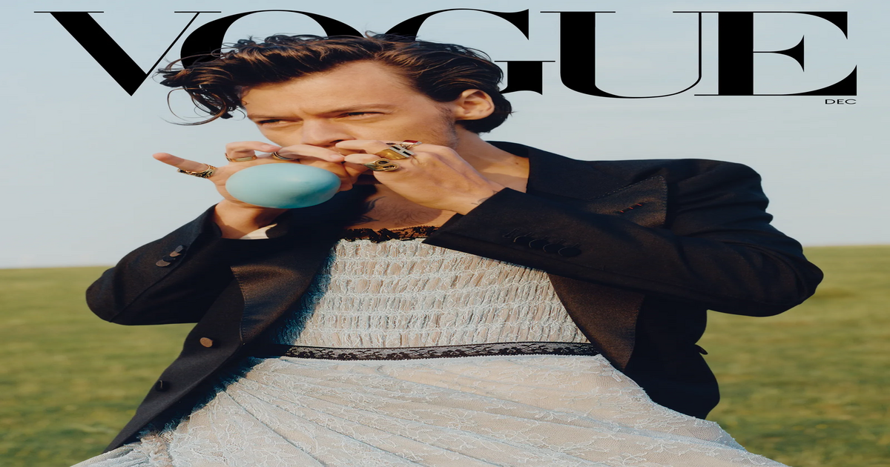
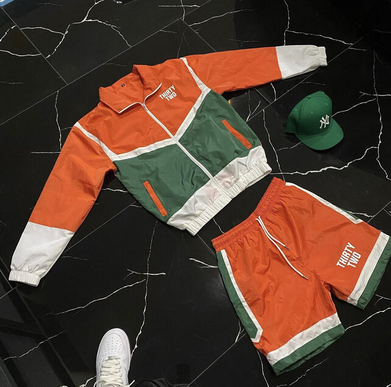

Figuring out your Style!
Carlos RussellThere are hundreds of websites for you to pick from when it comes to getting help picking your style of dressing, such as Pinterest, Instagram, and even TikTok. People all across the world dress differently and every one of them developed that style either on their own or using another person as an example. There's nothing wrong with that. At Thirty Two Clothing we specialize in street wear but our designs are meant to be unisex so anyone can pick a clothing item and style it the way they want with something else. But its okay to step out of your comfort zone, sometimes getting to know your self can be uncomfortable but after a while you will embrace it and find what's right for you. Take Harry Styles for example, on social media people spread his pictures around since he may wear a dress or something feminine once in a while, but it could be considered a fashion statement. If the way he dresses is what makes him feel like he can express himself then that's exactly what he should do. You Should Two! Heres a good website for you to learn more about how to style yourself:
Click Here for the Style Site!
What is Thirty Two?
Carlos Russell| Date | Milestone |
|---|---|
| May 7, 2023 | The Creation of ThirtyTwo Clothing |
| May 19, 2023 | Released my first item |
Thirty Two Clothing brand was created because I've always had a passion for fashion as corny as it sounds. I often realized that other clothing brands didn't have the type of clothing I was looking for, so I decided to make my own. Every piece of clothing is designed with care and an expression of art in a materialistic form. Before taking the step to create my own brand I used to search all over different platforms like Instagram and TikTok for somewhat decent clothing items, but after a while I only would find two or three things. I even looked at popular websites like Fashion Nova, Boohoo Man, Nike, etc and most items either seemed corny or just wasn't the style I was going for. I'm not into oversized graphic tees which is what those sites offer a lot of. Finding something that fit my body the right way and also conveyed my street wear type of t-shirts I would wear. Also for bigger guys, getting the right size in shorts can be tricky when dealing with online shopping since you never know how flexible the waist line or thigh region will be. There are many factors that played into the creation of Thirty Two Clothing, but fashion being my passion is the main one.
